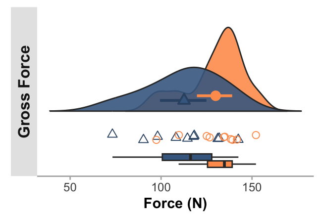
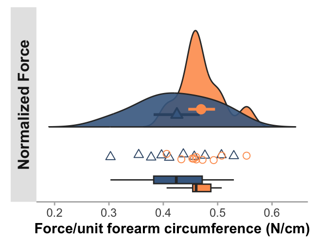
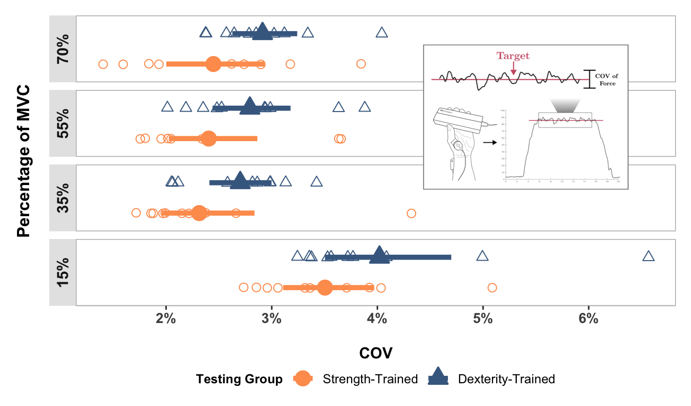
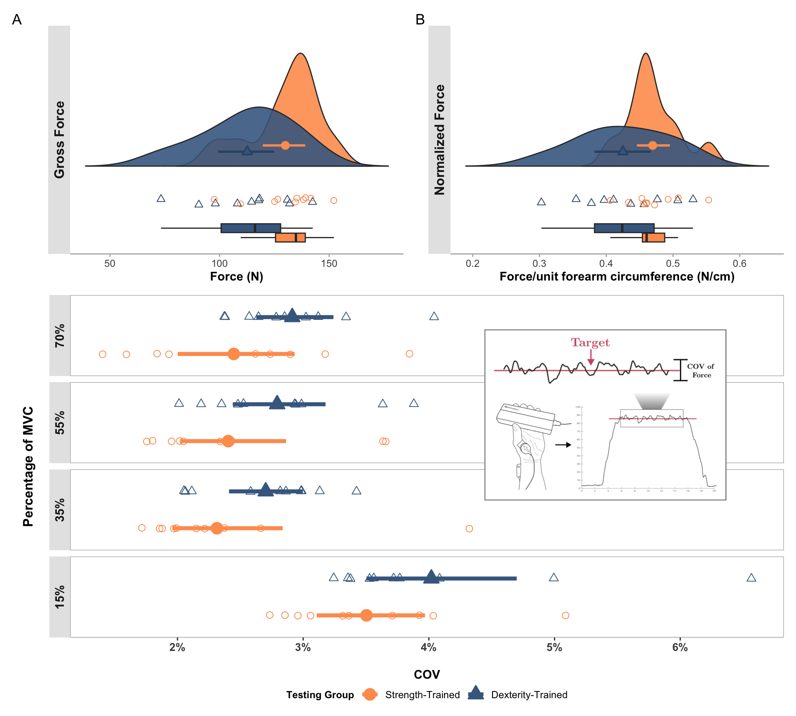

# install.packages("tidyverse")
# install.packages("boot")
# install.packages("bootES")
# install.packages("kableExtra")
# install.packages("ggpubr")
# install.packages("ggpp")
# install.packages("gt")
# install.packages("patchwork")
# install.packages("rsvg")
# install.packages("grid")
# install.packages("svglite")
#
# if (!require("devtools")) install.packages("devtools")
# devtools::install_github("psyteachr/introdataviz")Analysis of Demographic, Anthropometric, and Force Data with Plotting
Initialise and Input Data.
Install dependencies if needed:
Load required packages and set seed:
library(tidyverse)
library(boot)
library(bootES)
library(kableExtra)
library(ggpubr)
library(introdataviz)
library(ggpp)
library(gt)
library(patchwork)
library(rsvg)
library(grid)
library(svglite)
set.seed(12765)Specify source of required helper functions:
source("calculate_bootstrap_confidence_intervals.R")
source("calculate_bootstrap_effectsize.R")
source("force_plots_utils.R")
source("descriptives_table_util.R")Load the data file for analysis:
demographic_anthropometric_force_data <-
read_csv("demographic_anthropometric_force_data.csv") %>%
mutate(testing_group = as.factor(testing_group))Here are the headers and column types for each variable:
glimpse(demographic_anthropometric_force_data,1)Rows: 20
Columns: 20
$ participant <dbl> …
$ testing_group <fct> …
$ age <dbl> …
$ height <dbl> …
$ mass <dbl> …
$ forearm_circumference <dbl> …
$ fds_thickness <dbl> …
$ time_taken_to_complete_dexterity <dbl> …
$ dexterity_accuracy <dbl> …
$ dexterity_attempts <dbl> …
$ max_force <dbl> …
$ max_force_bodymass_normalised <dbl> …
$ max_force_fds_thickness_normalised <dbl> …
$ max_force_forearm_circumference_normalised <dbl> …
$ specific_training_time <dbl> …
$ general_resistance_training_time <dbl> …
$ cov_force_15 <dbl> …
$ cov_force_35 <dbl> …
$ cov_force_55 <dbl> …
$ cov_force_70 <dbl> …Calculate bootstrapped means and 95% confidence intervals for each group
Each calculation uses 10000 bootstrapped samples (with replacement).
The calculations are used later for plotting.
NOTE: this script may produce bootstrapped means and 95% CI marginally different from those published. This is common with the bootstrapping approach, as bootstrapping involves random resampling. The changes will be incredibly minimal, given we have set a seed at the beginning of this script, and would not affect overall conclusions.
Show functions to calculate group mean and 95% CI
# FUNCTION: calculate_group_boot_confint
# Calculates bootstrap confidence intervals separately for dexterity and strength groups
# Inputs:
# - dataframe: "demographic_anthropometric_force_data.csv".
# - columns to exclude: participant ID and testing group (as these do not need to be analysed).
# - number of bootstrap replicates: R = 10000 is used.
# Outputs:
# - dataframe containing bootstrapped means and 95% confidence intervals for each group/column
calculate_group_boot_confint <- function(data, exclude_columns = c("participant", "testing_group"), R = 10000) {
# Get columns to analyze (excluding specified ones)
columns_to_include <- setdiff(names(data), exclude_columns)
# Process each column with the bootstrapping "boot" function.
ci_means <- lapply(columns_to_include, function(column) {
# Bootstrap for dexterity group means
results_dexterity <- boot(data,
\(data, indices) mean_per_group(data, indices, "dexterity", column),
R)
# Bootstrap for strength group means
results_strength <- boot(data,
\(data, indices) mean_per_group(data, indices, "strength", column),
R)
# Calculate 95% confidence intervals using percentile method
ci_dexterity <- boot.ci(results_dexterity, type = "perc")
ci_strength <- boot.ci(results_strength, type = "perc")
# Combine results into single dataframe with group means and 95% CIs
data.frame(
Testing_Variable = column,
testing_group = c("dexterity", "strength"),
Mean = c(mean(data[[column]][data$testing_group == "dexterity"]),
mean(data[[column]][data$testing_group == "strength"])),
Lower_CI = c(ci_dexterity$percent[4], ci_strength$percent[4]), # 2.5th percentile
Upper_CI = c(ci_dexterity$percent[5], ci_strength$percent[5]) # 97.5th percentile
)
})
do.call(rbind, ci_means) %>% # Combine all results
mutate(across(c('Mean', 'Lower_CI', 'Upper_CI'), \(x) round(x, 5))) # Round to 5 decimal places
}
# HELPER FUNCTION: mean_per_group
# Helper function to calculate mean for a specific group during bootstrap
# Used by calculate_group_boot_confint
mean_per_group <- function(data, indices, testing_group, column) {
d <- data[indices, ] # Get bootstrap sample
group_data <- d[[column]][d$testing_group == testing_group] # Extract group data
return(mean(group_data)) # Calculate mean
}group_means_and_ci_boot <- calculate_group_boot_confint(
demographic_anthropometric_force_data)rounded_group_means_and_ci_boot <- group_means_and_ci_boot %>%
mutate(across(c('Mean', 'Lower_CI', 'Upper_CI'), \(x) round(x, 2))) # Round to 2dp
kable(rounded_group_means_and_ci_boot) %>%
kable_styling(c("striped", "hover", "condensed")) %>%
collapse_rows(columns = 1, valign = "middle")| Testing_Variable | testing_group | Mean | Lower_CI | Upper_CI |
|---|---|---|---|---|
| age | dexterity | 23.00 | 20.10 | 26.50 |
| strength | 23.70 | 21.67 | 26.46 | |
| height | dexterity | 182.80 | 178.51 | 187.37 |
| strength | 174.04 | 170.51 | 177.73 | |
| mass | dexterity | 74.99 | 69.05 | 80.35 |
| strength | 67.41 | 62.28 | 72.81 | |
| forearm_circumference | dexterity | 264.20 | 256.58 | 271.70 |
| strength | 276.50 | 262.09 | 287.45 | |
| fds_thickness | dexterity | 191.65 | 175.28 | 206.40 |
| strength | 195.11 | 173.38 | 217.01 | |
| time_taken_to_complete_dexterity | dexterity | 15.47 | 14.28 | 16.63 |
| strength | 17.54 | 16.31 | 18.96 | |
| dexterity_accuracy | dexterity | 98.45 | 97.46 | 99.44 |
| strength | 99.38 | 98.45 | 100.00 | |
| dexterity_attempts | dexterity | 1.10 | 1.00 | 1.33 |
| strength | 1.10 | 1.00 | 1.33 | |
| max_force | dexterity | 112.64 | 99.39 | 124.94 |
| strength | 130.02 | 119.70 | 139.11 | |
| max_force_bodymass_normalised | dexterity | 1.53 | 1.30 | 1.76 |
| strength | 1.94 | 1.80 | 2.09 | |
| max_force_fds_thickness_normalised | dexterity | 0.59 | 0.53 | 0.65 |
| strength | 0.68 | 0.62 | 0.75 | |
| max_force_forearm_circumference_normalised | dexterity | 0.42 | 0.38 | 0.47 |
| strength | 0.47 | 0.45 | 0.50 | |
| specific_training_time | dexterity | 12.10 | 9.83 | 14.78 |
| strength | 13.47 | 10.75 | 16.21 | |
| general_resistance_training_time | dexterity | 0.75 | 0.22 | 1.33 |
| strength | 1.10 | 0.29 | 2.22 | |
| cov_force_15 | dexterity | 0.04 | 0.04 | 0.05 |
| strength | 0.04 | 0.03 | 0.04 | |
| cov_force_35 | dexterity | 0.03 | 0.02 | 0.03 |
| strength | 0.02 | 0.02 | 0.03 | |
| cov_force_55 | dexterity | 0.03 | 0.02 | 0.03 |
| strength | 0.02 | 0.02 | 0.03 | |
| cov_force_70 | dexterity | 0.03 | 0.03 | 0.03 |
| strength | 0.02 | 0.02 | 0.03 |
Calculate mean differences and 95% confidence intervals
Each calculation uses the formula
\(\bar{x}_{(dexterity-trained)}- \bar{x}_{(strength-trained)}\).
Therefore:
If CI is positive and doesn’t cross 0: dexterity-trained>strength-trained.
If CI is negative and doesn’t cross 0: strength-trained>dexterity-trained.
If CI crosses 0: no difference between groups.
NOTE: this script may produce bootstrapped mean differences and 95% CI marginally different from those published. This is common with the bootstrapping approach, as bootstrapping involves random resampling. The changes will be incredibly minimal, given we have set a seed at the beginning of this script, and would not affect overall conclusions.
Show functions to calculate mean differences and 95% CI
# FUNCTION: calculate_meandiff_boot_confint
# Calculates bootstrap confidence intervals for differences between groups
# Inputs:
# - dataframe: "demographic_anthropometric_force_data.csv".
# - columns to exclude: participant ID and testing group (as these do not need to be analysed).
# - number of bootstrap replicates: R = 10000 is used.
# Outputs:
# - dataframe containing bootstrapped group difference of means and their 95% confidence intervals.
calculate_meandiff_boot_confint <- function(data, exclude_columns = c("participant", "testing_group"), R = 10000) {
columns_to_include <- setdiff(names(data), exclude_columns)
# Process each column with the bootstrapping "boot" function.
ci_results <- lapply(columns_to_include, function(column) {
# Calculate bootstrap samples of mean differences
results <- boot(data, \(data, indices) mean_diff(data, indices, column), R)
ci <- boot.ci(results, type = "perc") # Get confidence intervals
# Store results with column name
data.frame(
Testing_Variable = column,
Mean_Diff = mean_diff(data, 1:nrow(data), column),
Lower_CI = ci$percent[4], # 2.5th percentile
Upper_CI = ci$percent[5] # 97.5th percentile
)
})
# Combine and round results
do.call(rbind, ci_results) %>%
mutate(across(c('Mean_Diff', 'Lower_CI', 'Upper_CI'), \(x) round(x, 5))) # Round to 5 decimal places
}
# HELPER FUNCTION: mean_diff
# Helper function to calculate difference in means between groups
# Used by calculate_meandiff_boot_confint
mean_diff <- function(data, indices, column) {
d <- data[indices, ] # Get bootstrap sample
# Calculate means for each group
dexterity <- d[[column]][d$testing_group == "dexterity"]
strength <- d[[column]][d$testing_group == "strength"]
return(mean(dexterity) - mean(strength)) # Return difference
}mean_difference_ci_boot <- calculate_meandiff_boot_confint(
demographic_anthropometric_force_data)rounded_mean_difference_ci_boot <- mean_difference_ci_boot %>%
mutate(across(c('Mean_Diff', 'Lower_CI', 'Upper_CI'), \(x) round(x, 2))) # Round to 2 dp
kable(rounded_mean_difference_ci_boot) %>%
kable_styling(c("striped", "hover","condensed"))| Testing_Variable | Mean_Diff | Lower_CI | Upper_CI |
|---|---|---|---|
| age | -0.70 | -4.64 | 3.42 |
| height | 8.76 | 3.00 | 14.57 |
| mass | 7.58 | -0.48 | 15.11 |
| forearm_circumference | -12.30 | -25.79 | 3.54 |
| fds_thickness | -3.46 | -29.95 | 21.95 |
| time_taken_to_complete_dexterity | -2.07 | -3.90 | -0.39 |
| dexterity_accuracy | -0.93 | -2.17 | 0.38 |
| dexterity_attempts | 0.00 | -0.29 | 0.27 |
| max_force | -17.38 | -33.41 | -1.57 |
| max_force_bodymass_normalised | -0.41 | -0.67 | -0.14 |
| max_force_fds_thickness_normalised | -0.09 | -0.18 | 0.00 |
| max_force_forearm_circumference_normalised | -0.04 | -0.09 | 0.00 |
| specific_training_time | -1.37 | -4.96 | 2.40 |
| general_resistance_training_time | -0.35 | -1.57 | 0.67 |
| cov_force_15 | 0.01 | 0.00 | 0.01 |
| cov_force_35 | 0.00 | 0.00 | 0.01 |
| cov_force_55 | 0.00 | 0.00 | 0.01 |
| cov_force_70 | 0.00 | 0.00 | 0.01 |
Here are the filtered results for all testing variables that do not cross 0.
mean_diff_significant_results <- mean_difference_ci_boot %>%
filter(Lower_CI > 0 | Upper_CI < 0) %>%
mutate(across(c('Mean_Diff', 'Lower_CI', 'Upper_CI'), \(x) round(x, 2))) # Round to 2 dp
kable(mean_diff_significant_results) %>%
kable_styling(c("striped", "hover","condensed"))| Testing_Variable | Mean_Diff | Lower_CI | Upper_CI |
|---|---|---|---|
| height | 8.76 | 3.00 | 14.57 |
| time_taken_to_complete_dexterity | -2.07 | -3.90 | -0.39 |
| max_force | -17.38 | -33.41 | -1.57 |
| max_force_bodymass_normalised | -0.41 | -0.67 | -0.14 |
Calculate bootstrapped effect sizes and their 95% confidence intervals
- Calculates bootstrapped between-group effect sizes as Cohen’s \(d\).
- NOTE: this script may produce bootstrapped effect sizes and their 95% CI marginally different from those published. This is common with the bootstrapping approach, as bootstrapping involves random resampling. The changes will be incredibly minimal, given we have set a seed at the beginning of this script, and would not affect overall conclusions.
Show function to calculate effect sizes
# FUNCTION: apply_bootES
# Calculates Cohen's d effect size using bootES package
# Inputs:
# - dataframe: "demographic_anthropometric_force_data.csv".
# - column_name: columns for analysis
# - number of bootstrap replicates: R = 10000 is used.
# Outputs:
# - BootES results: Cohen's d effect size and 95% confidence intervals, along with other metrics.
# Note: returns NULL for non-numeric columns
apply_bootES <- function(data, column_name, R = 10000) {
if (is.numeric(data[[column_name]])) {
# Prepare data for bootES analysis
combined_boot <- data %>%
select(testing_group, all_of(column_name))
# Run bootES with 10000 replicates
bootES(combined_boot,
R,
data.col = column_name,
group.col = "testing_group",
contrast = c("strength","dexterity"),
effect.type = "cohens.d")
} else {
return(NULL)
}
}columns_to_analyze <- setdiff(names
(demographic_anthropometric_force_data),
"testing_group"
)
effect_sizes_boot <- setNames(
lapply(columns_to_analyze, \(x)
apply_bootES(demographic_anthropometric_force_data,
x)),columns_to_analyze)
effect_sizes_boot <- Filter(Negate(is.null),
effect_sizes_boot)Effect sizes:
Trivial when \(d < 0.2\).
Small when \(d = 0.2 - 0.5\).
Moderate when \(d = 0.5 - 0.8\).
Large when \(d \ge 0.8\).
Confidence Intervals:
If CI is positive and doesn’t cross 0: dexterity-trained>strength-trained.
If CI is negative and doesn’t cross 0: strength-trained>dexterity-trained.
If CI crosses 0: no difference between groups.
Show function to convert effect size results to dataframe
# FUNCTION: boot_results_to_df
# Converts bootES results to a df for easier viewing
# Inputs:
# - boot_list: a list of results from several colimns using the apply_bootES function.
# Outputs:
# - dataframe: containing Cohen's d effect size and 95% confidence intervals.
boot_results_to_df <- function(boot_list) {
data.frame(
Test_Variable = names(boot_list),
Cohens_d = sapply(boot_list, function(x) round(x$t0, 2)), # Round to 2 decimal places
Lower_CI = sapply(boot_list, function(x) round(x$bounds[1], 2)), # Round to 2 decimal places
Upper_CI = sapply(boot_list, function(x) round(x$bounds[2], 2)) # Round to 2 decimal places
)
}effect_sizes_table <- boot_results_to_df(effect_sizes_boot) %>%
filter(Test_Variable != "participant") # Remove participant ID effect sizes.
kable(effect_sizes_table, row.names = FALSE) %>%
kable_styling(c("striped", "hover","condensed"))| Test_Variable | Cohens_d | Lower_CI | Upper_CI |
|---|---|---|---|
| age | -0.15 | -1.20 | 0.79 |
| height | 1.32 | 0.27 | 2.25 |
| mass | 0.85 | -0.24 | 1.97 |
| forearm_circumference | -0.72 | -2.08 | 0.44 |
| fds_thickness | -0.11 | -1.07 | 0.86 |
| time_taken_to_complete_dexterity | -1.01 | -1.82 | -0.08 |
| dexterity_accuracy | -0.63 | -1.88 | 0.22 |
| dexterity_attempts | 0.00 | -0.88 | 0.67 |
| max_force | -0.93 | -1.89 | 0.04 |
| max_force_bodymass_normalised | -1.28 | -2.24 | -0.34 |
| max_force_fds_thickness_normalised | -0.83 | -1.65 | 0.14 |
| max_force_forearm_circumference_normalised | -0.77 | -1.70 | 0.22 |
| specific_training_time | -0.32 | -1.29 | 0.60 |
| general_resistance_training_time | -0.27 | -1.10 | 0.71 |
| cov_force_15 | 0.58 | -0.44 | 1.30 |
| cov_force_35 | 0.61 | -0.51 | 2.09 |
| cov_force_55 | 0.60 | -0.41 | 1.69 |
| cov_force_70 | 0.72 | -0.29 | 1.65 |
Descriptives table
Table 1 Anthropometric and demographic data. Shown as means (± standard deviation (SD)).
Show function to create descriptives table
# FUNCTION: create_descriptives_table
# Creates formatted table for several descriptive variables.
# (age, height, mass, hand training time, testing group)
# Inputs:
# - data: "demographic_anthropometric_force_data.csv".
# Outputs:
# - Formatted table of descriptive measures
create_descriptives_table <- function(data) {
# Step 1: Select and rename relevant columns for analysis
# Select demographic variables and testing group
# Rename columns to more readable format for final table
general_descriptives <- data %>%
select(age, height, mass, specific_training_time, testing_group) %>%
rename(
`Hand Training Time` = specific_training_time,
`Age` = age,
`Height` = height,
`Mass` = mass
) %>%
# Step 2: Calculate summary statistics by testing group
# Group data by testing_group and calculate mean and SD for each variable
# .names parameter creates new column names in format: variable_statistic
group_by(testing_group) %>%
summarise(across(everything(), list(
mean = ~mean(., na.rm = TRUE), # Calculate mean, removing NA values
sd = ~sd(., na.rm = TRUE) # Calculate std dev, removing NA values
), .names = "{col}_{fn}")) %>%
# Step 3: Reshape data for presentation
# First pivot: Transform summary statistics into separate rows
# Converts from wide to long format
pivot_longer(
cols = -testing_group, # Keep testing_group as is
names_to = c("Variable", ".value"), # Split column names into variable name and statistic type
names_pattern = "^(.*)_(mean|sd)$" # Pattern to match column names
) %>%
# Second pivot: Create separate columns for each testing group
# Transforms data to have mean and SD columns for each group
pivot_wider(
names_from = testing_group, # Create columns based on testing group
values_from = c(mean, sd) # Spread mean and SD values
)
# Step 4: Format table using gt (great table) package
general_descriptives %>%
gt() %>%
# Format all numeric columns to 2 decimal places
fmt_number(
columns = everything(),
decimals = 2
) %>%
# Step 5: Rename columns with clear, formatted labels
cols_label(
Variable = "Measure",
mean_dexterity = "Mean",
sd_dexterity = md("±SD"), # Plus/minus symbol (markdown)
mean_strength = "Mean",
sd_strength = md("±SD") # Plus/minus symbol (markdown)
) %>%
# Step 6: Add column groupings (spanners)
# Group strength-related columns
tab_spanner(
label = "Strength-trained",
columns = c(mean_strength, sd_strength)
) %>%
# Group dexterity-related columns
tab_spanner(
label = "Dexterity-Trained",
columns = c(mean_dexterity, sd_dexterity)
) %>%
# Step 7: Set column widths for consistent formatting
cols_width(
Variable ~ px(250), # Variable names get more space
everything() ~ px(100) # All other columns same width
) %>%
# Step 8: Apply table styling options
tab_options(
table.background.color = "white",
row.striping.background_color = "white",
table_body.hlines.style = "none", # Remove horizontal lines in body
column_labels.border.bottom.color = "black", # Add borders to column labels
column_labels.border.top.color = "black",
table_body.border.bottom.color = "black", # Add border to bottom of table
table.border.top.color = "black", # Add border to top of table
table.border.bottom.color = "black",
heading.border.bottom.color = "black"
) %>%
# Step 9: Disable row striping
opt_row_striping(
row_striping = FALSE
)
}descriptive_table <- create_descriptives_table(
demographic_anthropometric_force_data)
descriptive_table| Measure | Dexterity-Trained | Strength-trained | ||
|---|---|---|---|---|
| Mean | ±SD |
Mean | ±SD |
|
| Age | 23.00 | 5.27 | 23.70 | 4.06 |
| Height | 182.80 | 7.26 | 174.04 | 5.94 |
| Mass | 74.99 | 9.22 | 67.41 | 8.66 |
| Hand Training Time | 12.10 | 4.04 | 13.47 | 4.55 |
Plotting
Notes:
Female data points were tagged after their creation using an “F” in inkscape.
Custom font was used for published graphs, but removed here for reproducibility.
Some styling and organisation of plots were done in InkScape after their creation. All data elements were kept identical to their output, only aesthetic changes were made.
Create maximum force output plot
This plot shows the raw maximum force output per group.
Each plot contains:
Kernel density plot: shape of the data distribution.
Bootstrapped mean and 95% CI bars: pointrange bars are set inside the kernel density plot.
Individual data points: data from each participant.
Box and whisker plots: containing the interquartile ranges.
N legend is printed, as the plots are combined with the coefficient of variation of force plot (below).
Show function to create maxmium and nornalised force plots
# FUNCTION: create_force_plot
# Creates raincloud plots for maximum force metrics.
# Inputs:
# - data: "demographic_anthropometric_force_data.csv".
# - ci_data: output from the function "calculate_group_boot_confint" in "calculate_bootstrap_confidence_intervals.R".
# - force_var: column name of the force variable used (i.e. "max_force" or "max_force_forearm_circumference_normalised").
# - y_label: Label of the y-axis (such as "Force Output (N)")
# - strip label: 90 degree rotated plot title in grey shaded box (such as "Gross Force").
# Outputs:
# - Force variable raincloud plots.
create_force_plot <- function(data, ci_data, force_var, y_label, strip_label) {
# Controls spacing of the rain/jitter plot elements
rain_height <- 0.07
# Add a dummy faceting variable to the data
data$facet_var <- strip_label
# Filter confidence interval data and add faceting variable
ci_data_filtered <- ci_data[ci_data$Testing_Variable == force_var, ]
ci_data_filtered$facet_var <- strip_label
# Ensure consistent ordering of groups in visualization
# 'strength' appears before 'dexterity' in the plot
data$testing_group <- factor(data$testing_group, levels = c("strength", "dexterity"))
# Begin building the plot with multiple layers.
ggplot() +
# Layer 1: Violin plots ("clouds").
# Shows distribution kernel density of the data (uses the introdataviz package).
introdataviz::geom_flat_violin(
data = data,
aes(x = "", y = .data[[force_var]], fill = testing_group),
trim = FALSE, # Don't trim the tails of the distribution
alpha = 0.9, # Slight transparency
show.legend = FALSE,
position = position_nudge(x = rain_height + 0.07) # Shift position slightly
) +
# Layer 2: Individual participant data points ("rain")
# Jittered points showing participant raw data
geom_point(
data = data,
aes(x = "", y = .data[[force_var]], colour = testing_group, shape = testing_group),
size = 2.2,
stroke = 0.5,
show.legend = FALSE, # Hide from legend since shown in violin plot
position = position_jitter(width = rain_height - 0.055) # Add random noise
) +
# Layer 3: Box plots
# Show quartiles and median
geom_boxplot(
data = data,
aes(x = "", y = .data[[force_var]], fill = testing_group),
width = 0.07,
show.legend = FALSE, # Hide from legend since shown in violin plot
outlier.shape = NA, # Hide outliers since shown in rain plot
position = position_dodgenudge(width = 0.075, x = -rain_height * 1.8) # Change position to be below "rain".
) +
# Layer 4: Confidence intervals
# Show mean and CI from bootstrap analysis positioned inside the "clouds"
geom_pointrange(
data = ci_data_filtered,
aes(x = "", y = Mean, ymin = Lower_CI, ymax = Upper_CI,
color = testing_group, shape = testing_group, fill = testing_group),
linewidth = 1,
size = 0.6,
show.legend = FALSE,
position = position_dodgenudge(x = rain_height + 0.14,
width = 0.05) # Position inside the "clouds".
) +
# Add faceting with placeholder variable
facet_grid(rows = vars(facet_var), switch = "y") +
# Configure scales and coordinate system
scale_x_discrete(name = "", expand = c(rain_height * 3, 0, 0, 0.7)) +
scale_y_continuous() +
coord_flip() + # Flip coordinates for horizontal layout
theme_bw() +
# Apply theme and styling which will be consistent across plots
theme(
panel.grid.major = element_blank(),
panel.grid.minor = element_blank(),
panel.background = element_blank(),
panel.border = element_blank(),
axis.line.y = element_blank(),
axis.line.x = element_line(color = "grey70", linewidth = 0.5),
axis.ticks.y = element_blank(),
axis.ticks.x = element_line(color = "grey70", linewidth = 0.5),
axis.title.y = element_blank(),
axis.text.y = element_blank(),
axis.title.x = element_text(face = "bold", size = 11),
axis.text.x = element_text(size = 9),
strip.background = element_rect(fill = "grey90", color = NA), # Remove the box around facet labels
legend.position = "none",
strip.text.y = element_text(
angle = 90,
face = "bold",
size = 12
)
) +
# Add labels and titles
labs(
y = y_label,
fill = "Testing Group"
) +
# Define consistent visual encoding for testing groups
scale_shape_manual(values = c("strength" = 21, "dexterity" = 24),
labels = c("strength" = "Strength-Trained", "dexterity" = "Dexterity-Trained")) +
scale_color_manual(values = c("strength" = "#fe9d5d", "dexterity" = "#365373"),
labels = c("strength" = "Strength-Trained", "dexterity" = "Dexterity-Trained")) +
scale_fill_manual(values = c("strength" = "#fe9d5d", "dexterity" = "#456990"),
labels = c("strength" = "Strength-Trained", "dexterity" = "Dexterity-Trained"))
}gross_force_plot <- create_force_plot(
demographic_anthropometric_force_data,
group_means_and_ci_boot,
"max_force",
"Force (N)",
"Gross Force"
)
gross_force_plot
Create normalised maximum force output plot
The max force in this plot is normalised to forearm circumference.
Each plot contains:
Kernel density plot: shape of the data distribution.
Bootstrapped mean and 95% CI bars: pointrange bars are set inside the kernel density plot.
Individual data points: data from each participant.
Box and whisker plots: containing the interquartile ranges.
norm_force_plot <- create_force_plot(
demographic_anthropometric_force_data,
group_means_and_ci_boot,
"max_force_forearm_circumference_normalised",
"Force/unit forearm circumference (N/cm)",
"Normalized Force"
)
norm_force_plot
Create coefficient of variation of steady force plot
A plot for COV of force during each submaximal force task (a measure of force steadiness).
Each facet of the plot contains:
Bootstrapped means and 95% CI bars.
Individual data points: data from each participant.
Show function to create coefficient of variation of steady force plot
# FUNCTION: create_cov_force_plot
# Creates faceted plot that shows 95% CI and raw data points for foce steadiness (coefficient of varation of force)
# during the submaximal force trials
# Inputs:
# - data: "demographic_anthropometric_force_data.csv".
# - ci_data: output from the function "calculate_group_boot_confint" in "calculate_bootstrap_confidence_intervals.R".
# Outputs:
# - Force steadiness plot (coefficient of variation of force).
create_cov_force_plot <- function(data, ci_data) {
# Prepare coefficient of variation (COV) of force data for plotting
# Select relevant columns
plot_cov <- data %>%
select(participant, testing_group, cov_force_15, cov_force_35, cov_force_55, cov_force_70)
# Convert wide format to long format for plotting
plot_cov_force_long <- plot_cov %>%
pivot_longer(cols = -c(testing_group, participant),
names_to = "Variable",
values_to = "Value") %>%
# Recode variable names and set factor levels for proper ordering
mutate(
# Convert numeric suffixes to percentage labels
Variable = factor(recode(Variable,
"cov_force_15" = "15%",
"cov_force_35" = "35%",
"cov_force_55" = "55%",
"cov_force_70" = "70%"),
levels = c("70%", "55%", "35%", "15%")), # Order from high to low
testing_group = factor(testing_group, levels = c("strength", "dexterity"))
)
# Similarly prepare confidence interval data
plot_cov_force_CI <- ci_data %>%
filter(Testing_Variable %in% c("cov_force_15", "cov_force_35", "cov_force_55", "cov_force_70")) %>%
mutate(
Variable = factor(recode(Testing_Variable,
"cov_force_15" = "15%",
"cov_force_35" = "35%",
"cov_force_55" = "55%",
"cov_force_70" = "70%"),
levels = c("70%", "55%", "35%", "15%")),
testing_group = factor(testing_group, levels = c("strength", "dexterity"))
)
# Create multi-panel plot
ggplot() +
# Layer 1: Individual participant data points with jitter.
geom_jitter(data = plot_cov_force_long,
aes(x = Value, y = testing_group, color = testing_group, shape = testing_group),
size = 2.5,
stroke = 0.5,
position = position_jitterdodge(jitter.width = 0.05, dodge.width = 0.5),
show.legend = FALSE) +
# Layer 2: Bootstrapped mean and 95% confidence intervals
geom_pointrange(data = plot_cov_force_CI,
aes(x = Mean, y = testing_group,
xmin = Lower_CI, xmax = Upper_CI,
color = testing_group, shape = testing_group,
fill = testing_group),
size = 1,
linewidth = 1.7,
position = position_dodge(width = 0.5)) +
# Create separate panels for each force level
facet_grid(rows = vars(Variable), scales = "free_y", switch = "y") +
# Apply theme and styling which will be consistent across plots
theme_bw() +
theme(
panel.grid.major = element_blank(),
panel.grid.minor = element_blank(),
panel.border = element_rect(colour = "grey70"),
legend.position = "bottom",
legend.title = element_text(size = 9, face = "bold"),
legend.background = element_blank(),
legend.margin = margin(t = -7.5), # Adjust legend position (vertically up)
legend.text = element_text(size = 9),
axis.title.y = element_text(angle = 90, size = 12, face = "bold", hjust = 0.5,
vjust =0.5, margin = margin(r = 10)),
axis.text.y = element_blank(),
axis.ticks.y = element_blank(),
axis.line.y = element_blank(),
strip.text.y = element_text(angle = 90, size = 11, face = "bold"),
axis.title.x = element_text(size = 11, face = "bold", margin = margin(t = 15)),
axis.text.x = element_text(size = 10, face = "bold"),
axis.line.x = element_line(size = 0.3, colour = "grey80"),
title = element_blank(),
strip.background = element_rect(fill = "grey90", color = NA)
) +
# Add labels and configure scales
labs(x = "COV",
y = "Percentage of MVC",
fill = "Testing Group",
color = "Testing Group",
shape = "Testing Group") +
scale_x_continuous(labels = scales::percent) + # Format x-axis as force level percentages
# Apply consistent visual encoding for testing groups
scale_shape_manual(values = c("strength" = 21, "dexterity" = 24),
labels = c("strength" = "Strength-Trained", "dexterity" = "Dexterity-Trained")) +
scale_color_manual(values = c("strength" = "#fe9d5d", "dexterity" = "#456990"),
labels = c("strength" = "Strength-Trained", "dexterity" = "Dexterity-Trained")) +
scale_fill_manual(values = c("strength" = "#fe9d5d", "dexterity" = "#456990"),
labels = c("strength" = "Strength-Trained", "dexterity" = "Dexterity-Trained"))
}cov_plot <- create_cov_force_plot(
demographic_anthropometric_force_data,
group_means_and_ci_boot
)
# Create plot of cov_plot_schematic.svg
svg_plot <- ggplot() +
theme_void() +
annotation_custom(
grid::rasterGrob(
rsvg::rsvg("cov_plot_schematic.svg", width = 2000),
interpolate = TRUE
)
) +
theme(
plot.margin = margin(0, 0, 0, 0)
) +
labs(tag = waiver())
# Combine with schematic
cov_plot_with_schematic <- (cov_plot +
inset_element(
svg_plot,
left = 0.55,
bottom = 0.4,
right = 0.95,
top = 0.9
))
cov_plot_with_schematic
Combine plots into final panelled plot
combined_plot <- (gross_force_plot + labs(tag = "A") | norm_force_plot + labs(tag = "B")) / cov_plot_with_schematic + labs(tag = "C") +
plot_layout(
guides = 'collect', # Collect all legends
heights = c(0.4, 0.6), # Adjust height proportions
) &
theme(legend.position = "bottom") + # Position legends at the bottom
plot_annotation(tag_levels = "A") # Add tags for the plots
combined_plot